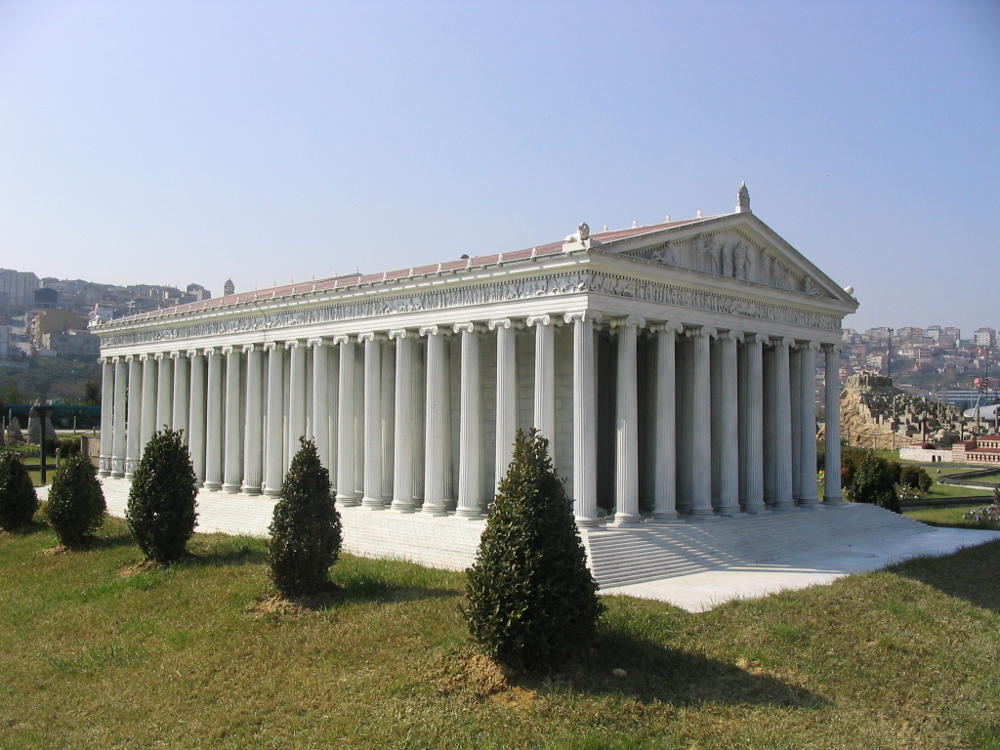

The Temple of Artemis or Artemision (Greek: ??teµ?s???, Turkish: Artemis Tapinagi), also known less precisely as the Temple of Diana, was a Greek temple dedicated to the goddess Artemis. It was located in Ephesus (near the modern town of Selçuk in present-day Turkey). One of the Seven Wonders of the Ancient World, it was completely rebuilt three times before its final destruction in 401 AD. Only foundations and sculptural fragments of the latest of the temples at the site remain.
The first sanctuary (temenos) antedated the Ionic immigration by many years, and dates to the Bronze Age. Callimachus, in his Hymn to Artemis, attributed it to the Amazons. In the 7th century BC, the old temple was destroyed by a flood. Its reconstruction began around 550 BC, under the Cretan architect Chersiphron and his son Metagenes, at the expense of Croesus of Lydia: the project took 10 years to complete. The temple was destroyed in 356 BC by Herostratus in an act of arson and was again rebuilt, this time as the Wonder.
